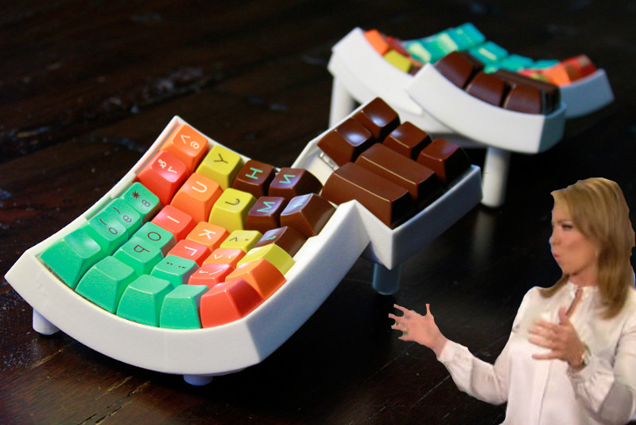
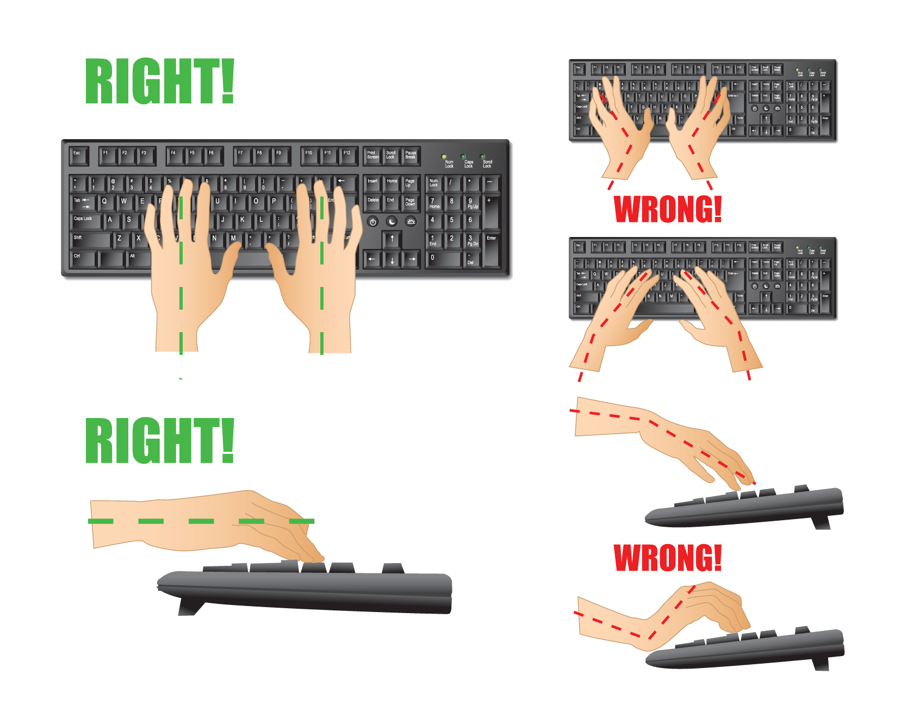
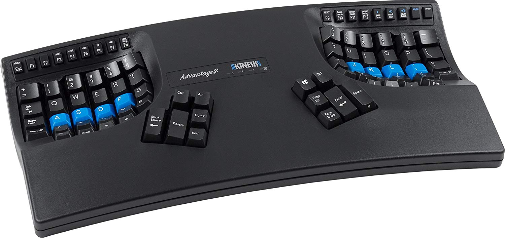
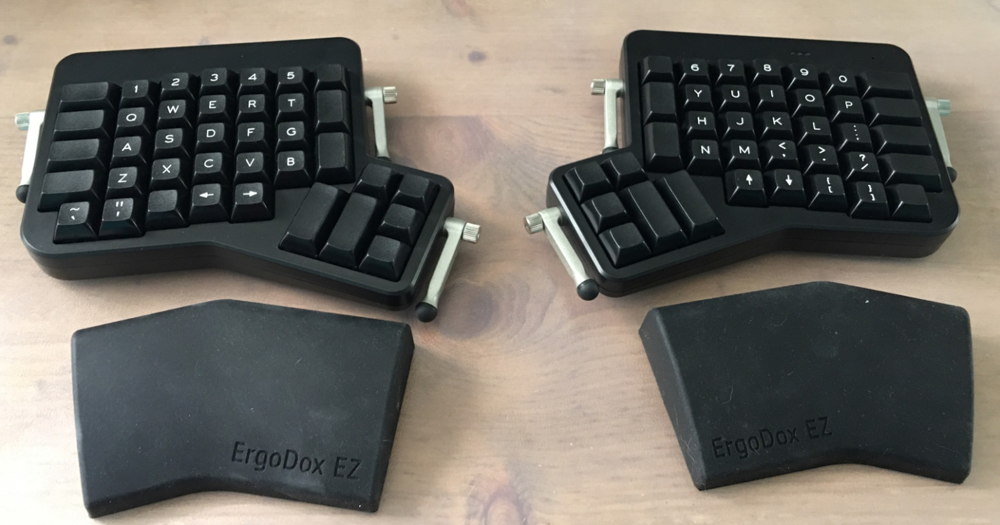
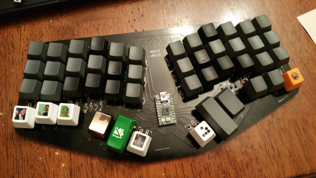
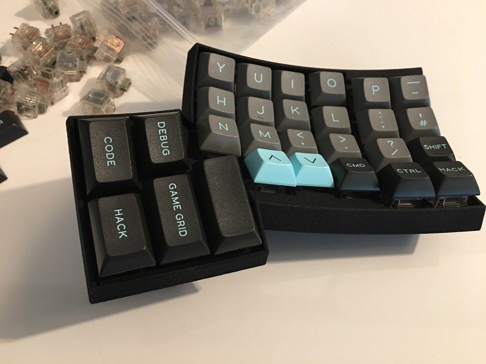
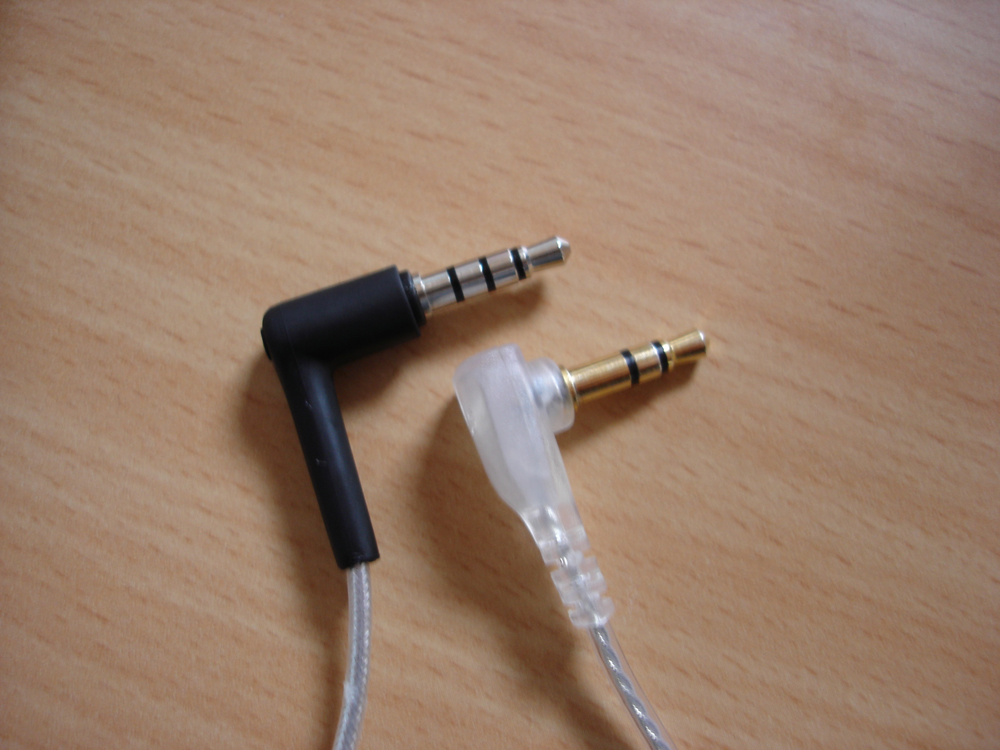

Rochester KLUG Keyboard Meetup
Tim Anderson
Created: 2019-07-11 Thu 09:52
Tim Anderson
Who am I?
So, what is this Dactyl Keyboard thing?
- And why should I care?

Parameterized, Split-Hand, Concave, Columnar, Ergonomic Keyboard
- Written in Clojure

History & Background
- https://www.youtube.com/watch?v=uk3A41U0iO4
- Started March 2015
- Made as an attempt at improving on the Kinesis Advantage2? @adereth
- Written in Clojure by using a wrapper arond OpenSCAD
Where is the Project Now?
- Last commit was in 2017
- Left in unfinished state & appears to be abandoned
- Documentation is left unfinished
- OpenSCAD functions don't stay consistant between versions or otherwise play nice with lisp wrapper.
- Most challenging build to take on
Why Tho?
So, let's look at a regular keyboard
- Single board is cost effective & efficient, but can encourage unhealthy posture
- Offset rows are holdovers from typwriters
What is RSI?

- Keep your hands flat and straight out from your shoulders (neutral position)
Notable Mentions
Kinesis Advantage2

- Advantages: Widely considered one of the best commercially available ergo keyboards for poeple suffering from RSI
- Disadvanteges: $320.00 USD, some reviews describe feeling 'cheap'
- Open Source: No
ErgoDox (EZ)

- Advantages: Lots of support if building from scratch, also may be a better product than Advantage2
- Disadvantages: Also about $300 if purchased commercially (depending on the options)
- Open Source: Both commercially available & open source
Let's Split

- Advantages: Split-hand, simple, affordable design (~$100 USD)
- Disadvantages: Not concave
- Open Source: Yes
Atreus

- Advantages: Small, single-board form factor
- Disadvantages: Not a split design?
- Open Source: Yes
Signum 3 (Troy Fletcher)

- Advantages: Very simple design (solder on components, nothing else to worry about)
- Disadvantages: PCB is $80, no case for protection
- Open Source: Yes?
Other Dactyl Variations
Dactyl Ergodox

- Advantages: Reuse your Ergodox keycaps (finding correct amount of keys can be difficult)
- Disadvantages: Incomplete design
- Open Source: Yes
Lightcycle Dactyl

- Advantages: Slightly smaller footprint (fewer keys)
- Disadvantages: STL files for 3D printing appear to need more repair than basic model
- Open Source: Yes
Dactyl Manuform

- Advantages: Thumb clusters are brought down to a more natural position, Case is larger making wiring less tedious
- Disadvantages: Must be wired by hand, all of the challenges that come with original Dactyl
- Open Source: Yes
More Do-it-Yourself Options
There is a very nice list of other ergonomic keyboards, with pictures, on Xah Lee's website.
Reasons for Choosing Dactyl
- Open Source
- Looked like the most comfortable design
- Kinesis Advantage form factor, but open source (non-commercial)
- Also looked hella cool
My Reasons for Building by Hand Instead of Purchasing
- At the time there were none being manufactured
- Sense of self-satisfaction
- I already own a 3D printer
- Screw paying someone else >$300, I'll just build my own!
- One year later joke
Build Overview
Shell/Case & Hardware
- Time
- Apologize for lack of media
- Print process involved trial & error. Segway into 3D print & support material.
- Hardware dimensions & heating countersunk screws. Make point of heatshrink on standoffs.
- Hardware, clearance & dimensions
Switches & Keycaps
- Fits Cherry MX switches, explain what they are
- Go over keycap profiles
- Keycap material, count & price
Etching
- 1:1 ratio of 3% Hydrogen Peroxide & Acid Magic (Marketed as 'safer' Muriatic Acid, found on Amazon.)
- All etching tutorial info (Storage & reuse)
- PCB etching (I probably went the most expensive route.)
- PCB design
Etching Process
PCB & Wiring
- The circuit design in the repo is inaccurate. I had to flip around some of the designs because they were backwards. I didn't find this out until after my first attempt at etching. Luckily I had another sheet of Pyralux that I bought in case I encountered those kinds of problems.
- Had to cross reference wiring with imgur images.
- Resistors for LEDs
- Which way to wire the diodes
- Wiring the Teensy
- How the keyboard is controlled by the MC (key matrix)
- Choosing LED Resistors
PSA: TRRS ≠ TRS!

Firmware
- Explain ubiquity of QMK
- Live demo
How Does it Work?

Was It Worth It?
- Parts table
Resources
Crowd sourced, limited manufacturing.
Working with members of the reddit mechanical keyboard community to commercialize different Dactyl variations.
I have no affiliation or experience with the above. YMMV!